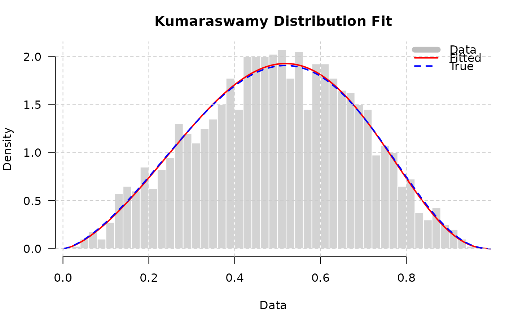

The gkwdist package provides a comprehensive, high-performance implementation of the five-parameter Generalized Kumaraswamy (GKw) distribution and its seven nested sub-families for modeling bounded continuous data on the unit interval \((0,1)\). All distribution and likelihood functions are implemented in C++ via RcppArmadillo for maximum computational efficiency.
Details
Overview
The Generalized Kumaraswamy distribution, proposed by Carrasco, Ferrari and Cordeiro (2010), extends the Kumaraswamy distribution (Jones, 2009) by incorporating three additional shape parameters. This generalization provides remarkable flexibility in accommodating various density shapes including unimodality, bimodality, asymmetry, J-shapes, inverted J-shapes, U-shapes, bathtub shapes, and heavy or light tails.
Mathematical Specification
The probability density function (PDF) of the GKw distribution with parameters \(\theta = (\alpha, \beta, \gamma, \delta, \lambda)\) (all positive) is: $$f(x; \theta) = \frac{\lambda\alpha\beta x^{\alpha-1}}{B(\gamma, \delta + 1)} (1 - x^\alpha)^{\beta-1} [1 - (1 - x^\alpha)^\beta]^{\gamma\lambda-1} \{1 - [1 - (1 - x^\alpha)^\beta]^\lambda\}^\delta$$ for \(0 < x < 1\), where \(B(a,b) = \Gamma(a)\Gamma(b)/\Gamma(a+b)\) is the beta function.
The cumulative distribution function (CDF) is: $$F(x; \theta) = I_{[1-(1-x^\alpha)^\beta]^\lambda}(\gamma, \delta + 1)$$ where \(I_y(a,b)\) denotes the regularized incomplete beta function ratio.
Distribution Family Hierarchy
The GKw distribution nests seven important sub-models:
- Beta-Kumaraswamy (BKw)
4 parameters: \((\alpha, \beta, \gamma, \delta)\). Set \(\lambda = 1\) in GKw.
- Kumaraswamy-Kumaraswamy (KKw)
4 parameters: \((\alpha, \beta, \delta, \lambda)\). Set \(\gamma = 1\) in GKw.
- Exponentiated Kumaraswamy (EKw)
3 parameters: \((\alpha, \beta, \lambda)\). Set \(\gamma = 1, \delta = 0\) in GKw. Has closed-form quantile function.
- McDonald (Mc)
3 parameters: \((\gamma, \delta, \lambda)\). Set \(\alpha = \beta = 1\) in GKw. Also known as Beta-Power distribution.
- Kumaraswamy (Kw)
2 parameters: \((\alpha, \beta)\). Set \(\gamma = \delta = \lambda = 1\) in GKw. Has closed-form CDF and quantile function.
- Beta
2 parameters: \((\gamma, \delta)\). Set \(\alpha = \beta = \lambda = 1\) in GKw. Classical beta distribution with
shape1 = gamma,shape2 = delta + 1.- Uniform
0 parameters. Set all shape parameters to 1.
Distribution Functions
The package provides the standard R distribution function API for all
seven distributions. Each distribution has four core functions with
prefix d, p, q, r:
Generalized Kumaraswamy (GKw):
dgkw: Density functionpgkw: Distribution function (CDF)qgkw: Quantile function (inverse CDF)rgkw: Random generation
Beta-Kumaraswamy (BKw):
dbkw, pbkw, qbkw, rbkw
Kumaraswamy-Kumaraswamy (KKw):
dkkw, pkkw, qkkw, rkkw
Exponentiated Kumaraswamy (EKw):
dekw, pekw, qekw, rekw
McDonald (Mc):
dmc, pmc, qmc, rmc
Kumaraswamy (Kw):
dkw, pkw, qkw, rkw
Beta:
dbeta_, pbeta_, qbeta_, rbeta_
All distribution functions are implemented in C++ for optimal performance.
Likelihood Functions
High-performance analytical log-likelihood, gradient, and Hessian functions
are provided for maximum likelihood estimation. These functions return
negative values to facilitate direct use with optimization routines
like optim, which perform minimization by default.
Function signature: function(par, data) where par is a numeric
vector of parameters and data is the observed sample.
ll*Negative log-likelihood: \(-\ell(\theta) = -\sum_{i=1}^n \log f(x_i; \theta)\)
gr*Negative gradient (negative score vector): \(-\nabla_\theta \ell(\theta)\)
hs*Negative Hessian matrix: \(-\nabla^2_\theta \ell(\theta)\)
Available for all distributions:
These analytical derivatives are exact (up to floating-point precision) and provide substantial performance gains over numerical approximations.
Utility Functions
gkwgetstartvalues: Compute starting values for optimization using method of moments or quantile matching
Applications
The GKw distribution family is particularly suitable for modeling:
Proportions and rates: Bounded continuous data in \((0,1)\)
Percentages: Economic indices, market shares, conversion rates
Fractions: Parts of a whole, concentration measures
Scores and indices: Normalized measurements, standardized tests
Reliability data: Component lifetimes on bounded domains
Hydrological phenomena: Reservoir levels, soil moisture content
Financial ratios: Debt-to-equity, current ratio, profit margins
Quality metrics: Defect rates, efficiency scores, purity levels
Biostatistics: Survival probabilities, dose-response curves
Advantages Over Standard Distributions
Compared to the classical Beta distribution, the GKw family offers:
Greater flexibility in density shapes (bimodal, U-shaped, bathtub)
Better accommodation of asymmetry and tail behavior
Closed-form CDF and quantile for some sub-models (Kw, EKw, KKw)
Computational efficiency via C++ implementation
Easy parameter interpretation through nested structure
Superior performance for extreme parameter values
Performance
All functions are implemented in C++ using RcppArmadillo, providing:
10-100× speedup over pure R implementations
Linear scaling with sample size
Optimized memory allocation
Numerical stability for extreme parameter values
Efficient vectorized operations
Typical benchmarks on modern hardware:
Density evaluation: \(>10^7\) evaluations per second
Log-likelihood: \(n = 10^6\) observations in \(<100\)ms
Gradient computation: \(<5\)× slower than log-likelihood
Model Selection Workflow
Recommended strategy for choosing among distributions:
Exploratory Analysis: Examine histograms, kernel density estimates, and summary statistics of your data.
Start Simple: Fit Beta and Kumaraswamy distributions (2 parameters). Use
optimwithmethod = "BFGS"and analytical gradients.Diagnostic Checking: Assess fit quality using Q-Q plots, probability plots, and goodness-of-fit tests (e.g., Kolmogorov-Smirnov).
Progressive Complexity: If simple models inadequate, try 3-parameter models (EKw or Mc), then 4-parameter models (BKw or KKw).
Information Criteria: Use AIC, BIC, or AICc to balance goodness-of-fit and model parsimony. Lower values indicate better models.
Nested Testing: Perform likelihood ratio tests when comparing nested models (e.g., Kw vs. EKw).
Cross-Validation: Validate final model on held-out data or via bootstrap procedures.
Residual Analysis: Examine probability integral transform residuals for uniformity and independence.
Statistical Inference
Maximum likelihood estimation is performed using numerical optimization:
Obtain starting values via
gkwgetstartvaluesor manual specification based on sample momentsMinimize negative log-likelihood using
optimwithmethod = "BFGS"or"L-BFGS-B"Provide analytical gradient via
grargument for faster convergence and improved accuracySet
hessian = TRUEto obtain observed information matrixCompute standard errors as
sqrt(diag(solve(hessian)))Construct confidence intervals using normal approximation or profile likelihood
Perform hypothesis tests using Wald, score, or likelihood ratio statistics
For large samples (\(n > 10^4\)), consider using method = "L-BFGS-B"
with box constraints to prevent parameter estimates from drifting to
boundary values or becoming numerically unstable.
References
Carrasco, J. M. F., Ferrari, S. L. P., and Cordeiro, G. M. (2010). A new generalized Kumaraswamy distribution. arXiv preprint arXiv:1004.0911. doi:10.48550/arXiv.1004.0911
Jones, M. C. (2009). Kumaraswamy's distribution: A beta-type distribution with some tractability advantages. Statistical Methodology, 6(1), 70-81. doi:10.1016/j.stamet.2008.04.001
Kumaraswamy, P. (1980). A generalized probability density function for double-bounded random processes. Journal of Hydrology, 46(1-2), 79-88. doi:10.1016/0022-1694(80)90036-0
Cordeiro, G. M., and de Castro, M. (2011). A new family of generalized distributions. Journal of Statistical Computation and Simulation, 81(7), 883-898. doi:10.1080/00949650903530745
McDonald, J. B. (1984). Some generalized functions for the size distribution of income. Econometrica, 52(3), 647-663. doi:10.2307/1913469
Eddelbuettel, D., and Francois, R. (2011). Rcpp: Seamless R and C++ Integration. Journal of Statistical Software, 40(8), 1-18. doi:10.18637/jss.v040.i08
Eddelbuettel, D., and Sanderson, C. (2014). RcppArmadillo: Accelerating R with high-performance C++ linear algebra. Computational Statistics & Data Analysis, 71, 1054-1063. doi:10.1016/j.csda.2013.02.005
Author
J. E. Lopes evandeilton@gmail.com ORCID: 0009-0007-5887-4084
LEG - Laboratory of Statistics and Geoinformation
PPGMNE - Graduate Program in Numerical Methods in Engineering
Federal University of Paraná (UFPR), Brazil
Examples
# \donttest{
## ========================================================================
## Example 1: Basic Distribution Functions
## ========================================================================
library(gkwdist)
# Set parameters for GKw distribution
alpha <- 2.0
beta <- 3.0
gamma <- 1.5
delta <- 2.0
lambda <- 1.2
# Create sequence of x values
x <- seq(0.01, 0.99, length.out = 200)
# Compute density
dens <- dgkw(x, alpha, beta, gamma, delta, lambda)
# Compute CDF
cdf <- pgkw(x, alpha, beta, gamma, delta, lambda)
# Compute specific quantiles
probs <- c(0.05, 0.25, 0.5, 0.75, 0.95)
quants <- qgkw(probs, alpha, beta, gamma, delta, lambda)
print(round(quants, 4))
#> [1] 0.1723 0.2886 0.3800 0.4743 0.6058
# Generate random sample
set.seed(123)
sample <- rgkw(1000, alpha, beta, gamma, delta, lambda)
# Visualization
par(mfrow = c(2, 2), mar = c(4, 4, 2, 1))
# PDF
plot(x, dens,
type = "l", lwd = 2, col = "darkblue",
main = "GKw Probability Density Function",
xlab = "x", ylab = "f(x)", las = 1
)
grid(col = "gray80", lty = 2)
# CDF
plot(x, cdf,
type = "l", lwd = 2, col = "darkred",
main = "GKw Cumulative Distribution Function",
xlab = "x", ylab = "F(x)", las = 1
)
grid(col = "gray80", lty = 2)
# Histogram of random sample
hist(sample,
breaks = 30, probability = TRUE,
col = "lightblue", border = "white",
main = "Random Sample from GKw",
xlab = "x", ylab = "Density", las = 1
)
lines(x, dens, col = "darkblue", lwd = 2)
grid(col = "gray80", lty = 2)
# Q-Q plot
theoretical <- qgkw(ppoints(length(sample)), alpha, beta, gamma, delta, lambda)
empirical <- sort(sample)
plot(theoretical, empirical,
pch = 19, col = rgb(0, 0, 1, 0.3),
main = "Q-Q Plot",
xlab = "Theoretical Quantiles", ylab = "Sample Quantiles", las = 1
)
abline(0, 1, col = "red", lwd = 2, lty = 2)
grid(col = "gray80", lty = 2)
par(mfrow = c(1, 1))
## ========================================================================
## Example 2: Comparing Distribution Families
## ========================================================================
# Create comparison plot
x <- seq(0.001, 0.999, length.out = 500)
par(mfrow = c(2, 2), mar = c(4, 4, 3, 1))
# GKw (5 parameters) - most flexible
plot(x, dgkw(x, 2, 3, 1.5, 2, 1.2),
type = "l", lwd = 2, col = "black",
main = "GKw Distribution (5 params)",
xlab = "x", ylab = "Density", las = 1, ylim = c(0, 3)
)
grid(col = "gray80", lty = 2)
# BKw (4 parameters)
plot(x, dbkw(x, 2, 3, 1.5, 2),
type = "l", lwd = 2, col = "darkgreen",
main = "BKw Distribution (4 params)",
xlab = "x", ylab = "Density", las = 1, ylim = c(0, 3)
)
grid(col = "gray80", lty = 2)
# EKw (3 parameters)
plot(x, dekw(x, 2, 3, 1.5),
type = "l", lwd = 2, col = "darkred",
main = "EKw Distribution (3 params)",
xlab = "x", ylab = "Density", las = 1, ylim = c(0, 3)
)
grid(col = "gray80", lty = 2)
# Kw (2 parameters) - base distribution
plot(x, dkw(x, 2, 3),
type = "l", lwd = 2, col = "darkblue",
main = "Kw Distribution (2 params)",
xlab = "x", ylab = "Density", las = 1, ylim = c(0, 3)
)
grid(col = "gray80", lty = 2)
par(mfrow = c(1, 1))
## ========================================================================
## Example 3: Maximum Likelihood Estimation
## ========================================================================
# Generate data from Kumaraswamy distribution
set.seed(2024)
n <- 2000
true_alpha <- 2.5
true_beta <- 3.5
data <- rkw(n, true_alpha, true_beta)
# Obtain starting values
start_vals <- gkwgetstartvalues(data, family = "kw", n_starts = 3)
# Maximum likelihood estimation with analytical gradient
fit <- optim(
par = start_vals,
fn = llkw, # Negative log-likelihood
gr = grkw, # Analytical gradient
data = data,
method = "BFGS",
hessian = TRUE,
control = list(maxit = 500)
)
# Extract results
mle <- fit$par
se <- sqrt(diag(solve(fit$hessian)))
# Construct confidence intervals (95%)
ci <- data.frame(
Parameter = c("alpha", "beta"),
True = c(true_alpha, true_beta),
MLE = mle,
SE = se,
Lower = mle - 1.96 * se,
Upper = mle + 1.96 * se
)
print(ci, digits = 4)
#> Parameter True MLE SE Lower Upper
#> alpha alpha 2.5 2.533 0.05693 2.422 2.645
#> beta beta 3.5 3.590 0.13664 3.322 3.858
# Goodness-of-fit diagnostic
x_grid <- seq(0.001, 0.999, length.out = 200)
fitted_dens <- dkw(x_grid, mle[1], mle[2])
true_dens <- dkw(x_grid, true_alpha, true_beta)
hist(data,
breaks = 40, probability = TRUE,
col = "lightgray", border = "white",
main = "Kumaraswamy Distribution Fit",
xlab = "Data", ylab = "Density", las = 1
)
lines(x_grid, fitted_dens, col = "red", lwd = 2, lty = 1)
lines(x_grid, true_dens, col = "blue", lwd = 2, lty = 2)
legend("topright",
legend = c("Data", "Fitted", "True"),
col = c("gray", "red", "blue"),
lwd = c(8, 2, 2), lty = c(1, 1, 2),
bty = "n"
)
grid(col = "gray80", lty = 2)

## ========================================================================
## Example 4: Model Selection Using Information Criteria
## ========================================================================
# Generate data from Exponentiated Kumaraswamy
set.seed(456)
n <- 1500
data <- rekw(n, alpha = 2, beta = 3, lambda = 1.5)
# Define competing models
models <- list(
Beta = list(
ll = function(par) llbeta(par, data),
gr = function(par) grbeta(par, data),
start = gkwgetstartvalues(data, family = "beta", n_starts = 2),
k = 2
),
Kw = list(
ll = function(par) llkw(par, data),
gr = function(par) grkw(par, data),
start = gkwgetstartvalues(data, family = "kw", n_starts = 2),
k = 2
),
EKw = list(
ll = function(par) llekw(par, data),
gr = function(par) grekw(par, data),
start = gkwgetstartvalues(data, family = "ekw", n_starts = 2),
k = 3
),
Mc = list(
ll = function(par) llmc(par, data),
gr = function(par) grmc(par, data),
start = gkwgetstartvalues(data, family = "mc", n_starts = 2),
k = 3
)
)
# Fit all models
results <- lapply(names(models), function(name) {
m <- models[[name]]
fit <- optim(par = m$start, fn = m$ll, gr = m$gr, method = "BFGS")
loglik <- -fit$value
aic <- -2 * loglik + 2 * m$k
bic <- -2 * loglik + m$k * log(n)
data.frame(
Model = name,
k = m$k,
LogLik = round(loglik, 2),
AIC = round(aic, 2),
BIC = round(bic, 2),
stringsAsFactors = FALSE
)
})
# Combine and sort by AIC
comparison <- do.call(rbind, results)
comparison <- comparison[order(comparison$AIC), ]
rownames(comparison) <- NULL
print(comparison)
#> Model k LogLik AIC BIC
#> 1 Kw 2 461.90 -919.80 -909.17
#> 2 Beta 2 461.54 -919.09 -908.46
#> 3 Mc 3 462.32 -918.63 -902.69
#> 4 EKw 3 462.17 -918.35 -902.41
cat("\nBest model by AIC:", comparison$Model[1], "\n")
#>
#> Best model by AIC: Kw
cat("Best model by BIC:", comparison$Model[which.min(comparison$BIC)], "\n")
#> Best model by BIC: Kw
## ========================================================================
## Example 5: Performance Comparison
## ========================================================================
if (requireNamespace("microbenchmark", quietly = TRUE)) {
library(microbenchmark)
# Generate large dataset
n <- 10000
data <- rkw(n, 2, 3)
# Compare different approaches
benchmark <- microbenchmark(
Manual_R = -sum(log(dkw(data, 2, 3))),
Cpp_LL = llkw(c(2, 3), data),
Cpp_Gradient = grkw(c(2, 3), data),
Cpp_Hessian = hskw(c(2, 3), data),
times = 100
)
print(benchmark)
}
## ========================================================================
## Example 6: Verifying Analytical Derivatives
## ========================================================================
# Generate small sample
set.seed(999)
data <- rkw(100, alpha = 2, beta = 3)
par <- c(2, 3)
# Analytical gradient
grad_analytical <- grkw(par, data)
# Numerical gradient (for comparison)
if (requireNamespace("numDeriv", quietly = TRUE)) {
grad_numerical <- numDeriv::grad(
func = function(p) llkw(p, data),
x = par
)
# Compare
comparison <- data.frame(
Parameter = c("alpha", "beta"),
Analytical = grad_analytical,
Numerical = grad_numerical,
Difference = abs(grad_analytical - grad_numerical)
)
print(comparison, digits = 10)
# Maximum absolute difference
cat(
"\nMax absolute difference:",
format(max(comparison$Difference), scientific = TRUE), "\n"
)
}
#> Parameter Analytical Numerical Difference
#> 1 alpha 2.945293344 2.945293345 2.175548630e-10
#> 2 beta -2.845656040 -2.845656040 4.430185108e-10
#>
#> Max absolute difference: 4.430185e-10
# }